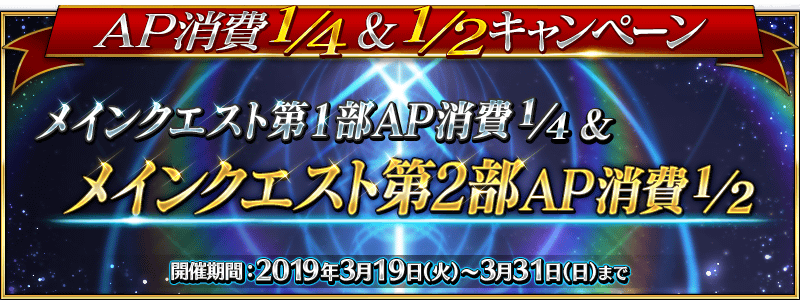

2019年3月19日(二) 17:00～3月31日(日) 22:59的期間，舉辦主線關卡第1部的AP消耗1/4、主線關卡第2部的AP消耗1/2的宣傳活動！
另外，預定3月下旬舉辦的期間限定活動「徳川廻天迷宮 大奥，參加條件第2部 第3章為「Lostbelt No.3 人智統合真國 SIN 紅之月下美人」的通過。
活用本宣傳活動，推進主線關卡的攻略吧！
詳情請在此處的公告確認。
◆舉辦期間◆
2019年3月19日(二) 17:00～3月31日(日) 22:59
※自由關卡為對象外。
※強化關卡、幕間物語、曜日關卡為對象外。

主線關卡第1部的AP消耗量以期間限定變成1/4，主線關卡第2部的AP消耗量以期間限定變成1/2！
尚未通過主線關卡第1部和主線關卡第2部的Master，請務必活用此機會！
◆舉辦期間◆
2019年3月19日(二) 17:00～3月31日(日) 22:59
◆對象關卡◆
主線關卡第1部(從特異點F到終局特異點)
主線關卡第2部(從Lostbelt No.1到Lostbelt No.3)
※請注意第1部、第2部的自由關卡為對象外。
※就算在戰鬥中撤退的情況，AP的消耗仍是1/4或1/2。
今後，也預定在期間限定活動和期間限定宣傳活動中，會有將通過主線關卡設為開放條件的情況。 如果活用本宣傳活動，對推進主線關卡的攻略會有所幫助。